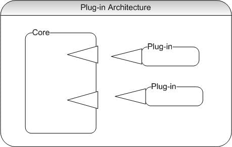

Chả là đang tập tọe làm wordpress plugin, bỗng dưng nảy ra câu hỏi thế cài đặt plugin trong java như thế nào. Trước giờ cũng chỉ làm theo kiểu yêu cầu đến đâu viết đến đấy chứ chưa được làm kiểu plugin này bao giờ cả. Đành hỏi bác Gúc vậy. sau một hồi đào bới cũng gọi là nắm đưọc đôi phần, note ra đây cho bác nào cùng chung thắc mắc.
plugin là khỉ gì?
Nói thế chứ plugin chắc không lạ gì rồi, điển hình như các thể loại trình duyệt phổ biến như Chrome, Firefox, Opera kiểu gì mỗi cái chả cài một đống plugin đến khi trình duyệt có gì bất thường lại chả lôi đầu mấy thằng plugin ra kiểm ra đầu tiên. một cách đơn giản thì Plugin chính là một bộ phần mềm cài đặt để hỗ trợ, mở rộng chức năng cho một phần mềm ứng dụng lớn hơn, dựa trận nhưng giao thức và API do phần mềm lớn cung cấp.
plugin có gì hay ho?
Kiến trúc plugin thực sự rất tuyệt vời, nó cho phép mở rộng (thập chí là thay đổi) các chức năng của các host applications (tạm gọi là ứng dụng chủ đi), với một thiết kế tốt các ứng dụng có thể cắm thêm bao nhiêu chức năng tùy thích mỗi plugin mang đến một tiện ích dẫn đến khả năng mở rộng của hệ thống là cực kỳ tuyệt vời mình xin phép đưọc nhai lại một lần nữa là phải thiết kế cho tốt nhé không là ứng úng lỗi tùm lum đó.
Với cộng đồng mã nguồn mở phát triển như vũ bão ngày nay, với một ứng dụng có base tốt và một plugin API tối thì tốc độ phát triển sẽ không thể tin nổi. VD như slack một hệ thống nhắn tin và trao đổi công việc đang rất nổi tuy cũng chỉ mới phát triển được vài năm nhưng số lượng plugin trong kho của slack đã rất khổng lồ hầu hết là do các bên thứ ba phảt triển, thực sự nâng giá trị của ứng dụng ban đầu lên gấp nhiều lần mà một team không thể làm hết được.
rồi, thế cài đặt thằng này thế nào?
Đối với các script language như Javascript, PHP, python… với dặc điểm mỗi lần chạy là một lần thông dịch thì có vẻ không gặp trở ngại gì chỉ việc dùng một thằng callback hay closure là xong cái này mình sẽ nói đến vào một ngày đẹp trời không xa. với java câu chuyện có vẻ không dễ dàng như thế, java 8 mới ra mắt tính năng Thinking cho phép cài đặt callback & closure một cách khá dễ dàng còn các ver thấp hơn thì không có cái gì tương tự cả, mình thì gà java nên cũng thấy vụ này hơi khoai.

Về cơ bản để có thể cắm được plugin thì ứng dụng phải có kiến trúc đơn giản nhất như trong hình trên, hai thành phần cơ bản đó là application core và plugin manager: - application core: thằng này là ứng dụng chủ có nhiệm bụ bào đảm logic của hệ thống, thực hiện các tác vụ và hook (gọi) các plugin thực hiện nhiệm vụ của mình trong runtime. - plugins manager: thằng chịu sự chỉ đạo của thằng core có nhiệm vụ đăng ký các plugin thêm, gỡ, bật, tắt các plugin.
Để có thể cắm được plugin ta phải có một plugin interface đây là giao diện mà tất cả các plugin sẽ kế thừa, plugin manager sẻ load các plugins và initial (nôm na là tạo ra thực thể của mỗi plugin) vào trong một List các plugins rồi từ đó application core sẽ lần lưọt móc ra từ cái một và bắt nó thực hiện nhiệm vụ nhất định.
Hì, mình giải thích củ chuối quá chắc ko ai hiểu nổi nhỉ. để trực quan sinh động mời ae xem ví dụ bên dưới.
ví dụ trực quan nè
Ở ví dụ này mình sẽ tạo một ứng dụng đơn giẩn với đầu vào là 1 số, các plugin sẽ đưọc thêm vào đê chế biến số đó để đưa ra kết quả cuối cùng cộng trừ nhân chia gì đó.
Ok, đầu tiên chúng ta phải có một thằng interface chung cho các plugins. tạm gọi là PluginFunction.java đi.
1 2 3 4 5 6 7 8 9 10 11 12 13 14 15
publicinterfacePluginFunction{
// let the application pass in a parameter publicvoidsetParameter(int param);
// retrieve a result from the plugin publicintgetResult();
// return the name of this plugin public String getPluginName();
// can be called to determine whether the plugin // aborted execution due to an error condition publicbooleanhasError(); }
Tiếp theo ta phải có một cái main để chạy logic của ứng dụng và gọi các plugin, ta gọi là PluginDemo.java chứa hàm main.
protectedvoidgetPlugins(){ File dir = new File(System.getProperty("user.dir") + File.separator + pluginsDir); ClassLoader cl = new PluginClassLoader(dir); if (dir.exists() && dir.isDirectory()) { // we'll only load classes directly in this directory - // no subdirectories, and no classes in packages are recognized String[] files = dir.list(); for (int i=0; i<files.length; i++) { try { // only consider files ending in ".class" if (! files[i].endsWith(".class")) continue;
Class c = cl.loadClass(files[i].substring(0, files[i].indexOf("."))); Class[] intf = c.getInterfaces(); for (int j=0; j<intf.length; j++) { if (intf[j].getName().equals("PluginFunction")) { // the following line assumes that PluginFunction has a no-argument constructor PluginFunction pf = (PluginFunction) c.newInstance(); plugins.add(pf); continue; } } } catch (Exception ex) { System.err.println("File " + files[i] + " does not contain a valid PluginFunction class."); } } } }
protectedvoidrunPlugins(){ Iterator iter = plugins.iterator(); while (iter.hasNext()) { PluginFunction pf = (PluginFunction) iter.next(); try { pf.setParameter(count); System.out.print(pf.getPluginName()); System.out.print(" ( "+count+" ) = "); if (pf.hasError()) { System.out.println("there was an error during plugin initialization"); continue; } int result = pf.getResult(); if (pf.hasError()) System.out.println("there was an error during plugin execution"); else System.out.println(result); count++; } catch (SecurityException secEx) { System.err.println("plugin '"+pf.getClass().getName()+"' tried to do something illegal"); } } } }
Ta thấy trong hàm getPlugins có một vòng for để load hết các class mà có interface là PluginFunction rồi tạo ra một thực thể của class đó và lưu vào mảng plugins. Sau đó hàm runPlugins sẽ duyệt qua tất cả cảc plugins set tham số chạy hàm run của từng plugin và in ra kết quả.
Ngoài ra hàm getPlugins còn có một điều thú vị nữa chính là dòng setSecurityManager, vì đây là các plugins độc lập với hệ thống nên ta phhair xét quền hạn cho nó chứ nhỡ thanh niên nào vui tính lại cho cái plugin xóa hết hệ điều hành thì chỉ biết ngồi đấy mà khóc thôi 😭.
/** * This is a fairly uptight security manager subclass. Classes loaded by * the PluginClassLoader are highly restricted in what they are allowed to do. * This is okay, because they're only supposed to calculate some values, * for which all necessary data is already available to them. * * A SecurityManager consists of various methods that the system calls to * check whether certain sensitive operations should be allowed. These * methods can throw a SecurityException to prevent the operation from * happening. With this SecurityManager, we want to prevent untrusted * code that was loaded by a class loader from performing those sensitive operations. * So we use inherited SecurityManager methods to check whether the call is being * made by an untrusted class. If it is, we throw an exception. * Otherwise, we simply return, allowing the operation to proceed normally. */
/** * This is the basic method that tests whether there is a class loaded * by a ClassLoader anywhere on the stack. If so, it means that that * untrusted code is trying to perform some kind of sensitive operation. * We prevent it from performing that operation by throwing an exception. * trusted() is called by most of the check...() methods below. */ protectedvoidtrusted(){ if (inClassLoader()) thrownew SecurityException(); }
/** * These are all the specific checks that a security manager can * perform. They all just call one of the methods above and throw a * SecurityException if the operation is not allowed. This * SecurityManager subclass is perhaps a little too restrictive. For * example, it doesn't allow loaded code to read *any* system properties, * even though some of them are quite harmless. */ publicvoidcheckCreateClassLoader(){ trusted(); } publicvoidcheckAccess(Thread g){ trusted(); } publicvoidcheckAccess(ThreadGroup g){ trusted(); } publicvoidcheckExit(int status){ thrownew SecurityException("Not allowed."); } publicvoidcheckExec(String cmd){ trusted(); } publicvoidcheckLink(String lib){ trusted(); } publicvoidcheckRead(java.io.FileDescriptor fd){ trusted(); } publicvoidcheckRead(String file){ // String path = new File(file).getParentFile().getAbsolutePath(); // if (! path.endsWith(pluginDir)) trusted(); } publicvoidcheckRead(String file, Object context){ trusted(); } publicvoidcheckWrite(java.io.FileDescriptor fd){ trusted(); } publicvoidcheckWrite(String file){ trusted(); } publicvoidcheckDelete(String file){ trusted(); } publicvoidcheckConnect(String host, int port){ trusted(); } publicvoidcheckConnect(String host,int port,Object context){trusted();} publicvoidcheckListen(int port){ trusted(); } publicvoidcheckAccept(String host, int port){ trusted(); } publicvoidcheckMulticast(java.net.InetAddress maddr){ trusted(); } publicvoidcheckMulticast(java.net.InetAddress maddr, byte ttl){ trusted(); } publicvoidcheckPropertiesAccess(){ trusted(); } publicvoidcheckPropertyAccess(String key){ // if (! key.equals("user.dir")) trusted(); } publicvoidcheckPrintJobAccess(){ trusted(); } publicvoidcheckSystemClipboardAccess(){ trusted(); } publicvoidcheckAwtEventQueueAccess(){ trusted(); } publicvoidcheckSetFactory(){ trusted(); } publicvoidcheckMemberAccess(Class clazz, int which){ trusted(); } publicvoidcheckSecurityAccess(String provider){ trusted(); }
/** Loaded code can only load classes from java.* packages */ publicvoidcheckPackageAccess(String pkg){ if (inClassLoader() && !pkg.startsWith("java.") && !pkg.startsWith("javax.")) thrownew SecurityException(); }
/** Loaded code can't define classes in java.* or sun.* packages */ publicvoidcheckPackageDefinition(String pkg){ if (inClassLoader() && ((pkg.startsWith("java.") || pkg.startsWith("javax.") || pkg.startsWith("sun.")))) thrownew SecurityException(); }
/** * This is the one SecurityManager method that is different from the * others. It indicates whether a top-level window should display an * "untrusted" warning. The window is always allowed to be created, so * this method is not normally meant to throw an exception. It should * return true if the window does not need to display the warning, and * false if it does. In this example, however, our text-based Service * classes should never need to create windows, so we will actually * throw an exception to prevent any windows from being opened. **/ publicbooleancheckTopLevelWindow(Object window){ trusted(); returntrue; } }
Ngoài ra ta còn cần 1 cái loader để load các plugins ra nữa PluginClassLoader.java
/** * In order to impose tight security restrictions on untrusted classes but * not on trusted system classes, we have to be able to distinguish between * those types of classes. This is done by keeping track of how the classes * are loaded into the system. By definition, any class that the interpreter * loads directly from the CLASSPATH is trusted. This means that we can't * load untrusted code in that way--we can't load it with Class.forName(). * Instead, we create a ClassLoader subclass to load the untrusted code. * This one loads classes from a specified directory (which should not * be part of the CLASSPATH). */
publicclassPluginClassLoaderextendsClassLoader{ /** This is the directory from which the classes will be loaded */ File directory;
/** The constructor. Just initialize the directory */ publicPluginClassLoader(File dir){ directory = dir; }
/** A convenience method that calls the 2-argument form of this method */ public Class loadClass(String name)throws ClassNotFoundException { return loadClass(name, true); }
/** * This is one abstract method of ClassLoader that all subclasses must * define. Its job is to load an array of bytes from somewhere and to * pass them to defineClass(). If the resolve argument is true, it must * also call resolveClass(), which will do things like verify the presence * of the superclass. Because of this second step, this method may be called to * load superclasses that are system classes, and it must take this into account. */ public Class loadClass(String classname, boolean resolve)throws ClassNotFoundException { try { // Our ClassLoader superclass has a built-in cache of classes it has // already loaded. So, first check the cache. Class c = findLoadedClass(classname);
// After this method loads a class, it will be called again to // load the superclasses. Since these may be system classes, we've // got to be able to load those too. So try to load the class as // a system class (i.e. from the CLASSPATH) and ignore any errors if (c == null) { try { c = findSystemClass(classname); } catch (Exception ex) {} }
// If the class wasn't found by either of the above attempts, then // try to load it from a file in (or beneath) the directory // specified when this ClassLoader object was created. Form the // filename by replacing all dots in the class name with // (platform-independent) file separators and by adding the ".class" extension. if (c == null) { // Figure out the filename String filename = classname.replace('.',File.separatorChar)+".class";
// Create a File object. Interpret the filename relative to the // directory specified for this ClassLoader. File f = new File(directory, filename);
// Get the length of the class file, allocate an array of bytes for // it, and read it in all at once. int length = (int) f.length(); byte[] classbytes = newbyte[length]; DataInputStream in = new DataInputStream(new FileInputStream(f)); in.readFully(classbytes); in.close();
// Now call an inherited method to convert those bytes into a Class c = defineClass(classname, classbytes, 0, length); }
// If the resolve argument is true, call the inherited resolveClass method. if (resolve) resolveClass(c);
// And we're done. Return the Class object we've loaded. return c; } // If anything goes wrong, throw a ClassNotFoundException error catch (Exception ex) { thrownew ClassNotFoundException(ex.toString()); } } }
Haiz, về cơ bản hệ thống setup thế là xong, tiếp theo ta sẽ cần 1 2 cái plugins để test thủ xem nó có chạy ổn không, ta sẽ đặt các file này trong thư mục plugins.
/** * This plugin tries to call System.exit(), which the SecurityManager doesn't allow. */
publicclassTryToExitimplementsPluginFunction{
publicvoidsetParameter(int param){ // this function doesn't care about its parameter, // so it doesn't even store it for later use }
publicintgetResult(){ // The next line will be caught by the SecurityManagers 'checkExit' method. System.exit(0); return42; }
public String getPluginName(){ return"TryToExit"; }
// yes, this operation can fail, but we are going to ignore this here publicbooleanhasError(){ returnfalse; } }
Tiếp theo là dịch và chạy thử, nếu không có gì sai thì sẽ thu được output như này, mình dùng java 8 nên có phun ra mấy cái Note, thôi kệ dù sao nó vẫn chạy được 😄:
1 2 3 4 5 6 7 8 9
minh@MINH-PC:~/Desktop/Plugin$ javac *.java Note: PluginSecurityManager.java uses or overrides a deprecated API. Note: Recompile with -Xlint:deprecation for details. Note: PluginDemo.java uses unchecked or unsafe operations. Note: Recompile with -Xlint:unchecked for details. minh@MINH-PC:~/Desktop/Plugin$ java PluginDemo TryToExit ( 1 ) = plugin 'TryToExit' tried to do something illegal PlusOne ( 1 ) = 2 Square ( 2 ) = 4
Thực ra toppic này còn thêm vấn đề nữa là build ra file jar và cài đặt plugin bằng xml nhưng tạp thời thế này đã. xin hẹn ae một dịp khác.
Xin chân thành cảm ơn bộ code mẫu của @Ulf Dittmer, các bạn code thể download code dể tham khảo.
Phùu… cảm ơn ae đã theo dõi đến tận đây, bài đã dài tay quay đã mỏi mình xin phép dừng phím tại đây. chúc ae cuối tuần vui vẻ. xin chào thân ái và quết thắng.